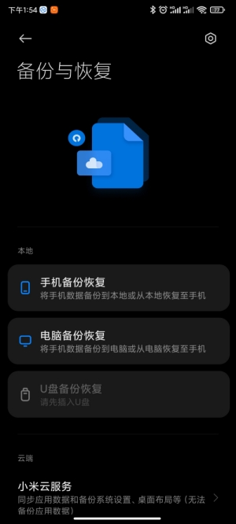
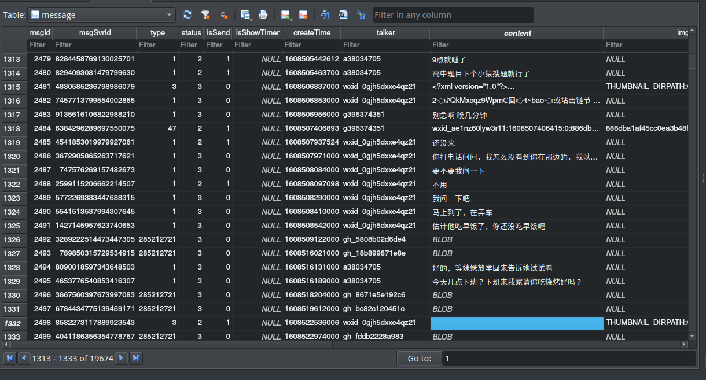
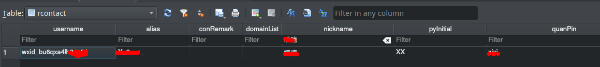
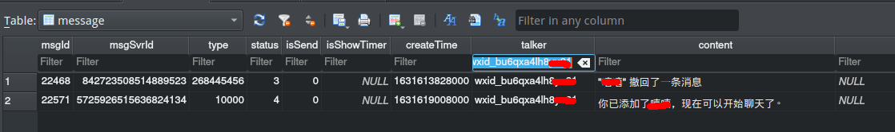
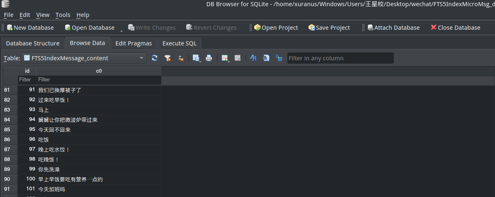

多年不再联系的朋友X偶然加了我微信，发了一条消息后又撤回了，很想知道她发了什么但又不好意思问，于是打算从微信的本地数据库找点线索。
手机是红米K30 Pro(MIUI 12.5)，微信版本8.0。由于手机没有Root，不能用ADB直接拿到数据，所以用MIUI的备份功能备份微信。

只单独备份微信一个APP，USB链接后在MIUI/backup/ALlBackup中拿到微信的备份包，可以用7zip打开并导出apps文件夹。
微信数据一般存放于SQlite的db文件中，搜索*.db文件可以发现apps/com.tencent.mm/r/MicroMsg/ee1da3ae2100e09165c2e52382cfe79f下有个挺大的EnMicroMsg.db文件，应该就是它了。对于有多个登录帐号的手机，每个账号对应一个apps/com.tencent.mm/r/MicroMsg/{你的帐号的hash}文件夹，里面存放数据库和一些资源文件。
拿到EnMicroMsg.db后用WinHex查看了一下，没有看到SQLite Header，果然是加密的。查阅资料得知EnMicroMsg.db的密钥生成规则是：对IMEI拼接uin再取32的MD5值，取前7个小写字符
部分手机IEMI可以通过在电话中输入*#6#获得（我的手机Android版本是11，APP不能获取到手机的IMEI，对于获取不到IMEI的情况，使用1234567890ABCDEF替代）
uin可以在apps/com.tencent.mm/sp/system_config_prefs.xml中获得：
<map>
<boolean name="set_service" value="true" />
<boolean name="first_launch_weixin" value="false" />
<int name="appbrand_video_player" value="-1" />
<int name="default_uin" value="1234323232" />
<int name="launch_last_status" value="2" />
<string name="support.weixin.qq.com">support.weixin.qq.com</string>
<string name="builtin_short_ips">6,117.184.242.101,80,short.weixin.qq.com|6,117.184.242.100,80,short.weixin.qq.com|9,223.166.152.100,80,short.weixin.qq.com|9,223.166.152.101,80,short.weixin.qq.com|17,11.89.15.100,80,short.weixin.qq.com|17,101.89.15.101,80,short.weixin.qq.com|6,117.184.242.101,80,extshort.weixin.qq.com|5,117.184.242.100,80,extshort.weixin.qq.com|17,101.89.15.100,80,extshort.weixin.qq.com|17,101.89.15.101,80,extshort.weixin.qq.com|9,223.166.152.101,80,extshort.weixin.qq.com|9,223.16.152.100,80,extshort.weixin.qq.com|6,120.204.10.51,80,short.pay.weixin.qq.com|6,183.192.199.145,80,short.pay.weixin.qq.com|9,223.167.104.142,80,short.pay.weixin.qq.com|9,58.247.204.143,80,short.pay.weixin.qq.com|17,101.226.211.100,80,short.pay.weixin.qq.com|17,180.163.25.142,80,short.pay.weixin.qq.com|17,127.0.0.1,80,localhost|</string>
</map>
其中default_uin对应的1234323232就是uin。有了IMEI和uin就可以计算出解密的key了，Python代码表示如下：import hashlib
key = hashlib.md5(str(imei).encode("utf8") + str(uin).encode("utf8")).hexdigest()[0:7]
微信的db使用了sqlcipher加密，ubuntu下用apt install sqlcipher安装sqlcipher，之后命令行下sqlcipher进入交互shell，用刚才得到的key将数据库解密成EnMicroMsg-decrypted.db：
PRAGMA key = 'xxxxxxx'; |
此时数据库已经能直接查看了：
查看SQLite的工具可以是付费的navicat，也可用开源的SQLite Browser。在rcontact表中用昵称找到X的微信号

再在message表中过滤，只查到两条相关记录：

很可惜，微信的撤回功能直接用一串文字替换了原来的信息，并非我预想的改变了某个标记位。
再次查阅了相关资料，据说FTS5IndexMicroMsg_encrypt.db中存放了索引，EnMicroMsg.db每产生一个聊天就会在FTS5IndexMicroMsg_encrypt.db中创建一个索引，可以尝试用它找到撤回前的内容。查阅资料得知FTS5IndexMicroMsg_encrypt的加密规则是：uin，IMEI，微信号拼接求32位md5值，取小写前7个字符
key = hashlib.md5(str(uin).encode("utf8") + str(imei).encode("utf8") + str(account).encode("utf8")).hexdigest()[0:7] |
对于FTS5IndexMicroMsg_encrypt.db的解密还需要需要修改之前几个参数：PRAGMA key = 'xxxxxxx'
PRAGMA cipher = 'aes-256-cbc';
PRAGMA cipher_use_hmac = ON;
PRAGMA cipher_page_size = 4096;
PRAGMA kdf_iter = 64000;
ATTACH DATABASE 'FTS5IndexMicroMsg_decrypt.db' AS fts5indexdecrypt KEY '';
SELECT sqlcipher_export( 'fts5indexdecrypt' );
DETACH DATABASE fts5indexdecrypt;
打开解密后的索引数据库，可以看到聊天内容被单独存放在FTSIndexMessage_content中

据说FTSIndexMessage_content中的数据会随着删除/消息撤回也同步删除，但不同于EnMicroMsg.db中的数据会写0覆盖，FTS5IndexMicroMsg_encrypt.db中的数据可以被恢复。
但用几个恢复SQLite数据的软件都没能找到疑似的信息，二进制编辑器中也没发现什么线索。
大失败，折腾好久仍未知道X说了什么。
或许是微信8.0后索引表也有了删除写0覆盖，总是先留着吧，万一有一天解出来了呢。
最后说一下遇到的几个坑：
之前在ArchLinux上用
pacman安装sqlcipher版本是最新的4.4.3，但是该版本下无法解密任何微信db，在某个issue里看到4以上的版本似乎采用了新的加密方式。之后使用WSL Ubuntu 20.04的apt安装sqlcipher得到了3.16的版本，可以对两个db都成功解密。一些教程提到的Windows下的
sqlcipher.exe的GUI程序实际上是修改了几个PRAGMA的SQLBrowser，只能解密EnMicroMsg.db，而FTS5IndexMicroMsg-encrypt需要不同的参数，无法解密。
参考资料